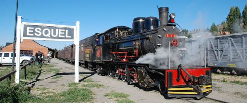
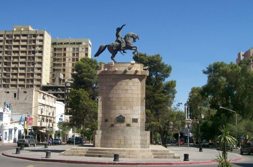

Conozca la Patagonia Argentina
Imagenes de la Patagonia:


La Patagonia esta formada por las provincias de La Pampa, Neuquén,
Río Negro, Chubut, Santa Cruz y Tierra del Fuego, con una superficie de 930.731 Km2.
En la imagen se pueden apreciar a la izquierda, el tren "La Trochita" pasando por
Esquel-Chubut, y a la derecha, el monumento a San Martin en Neuquen Capital.